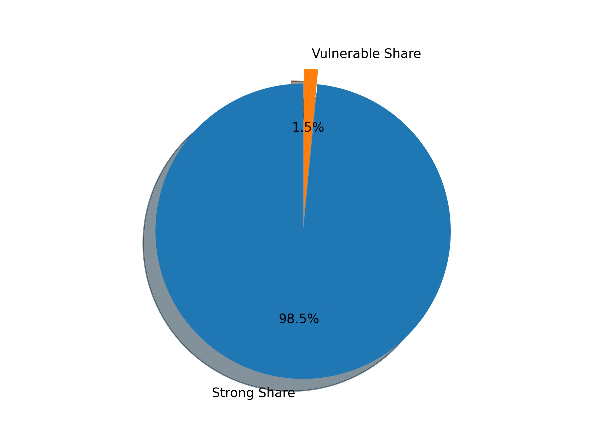
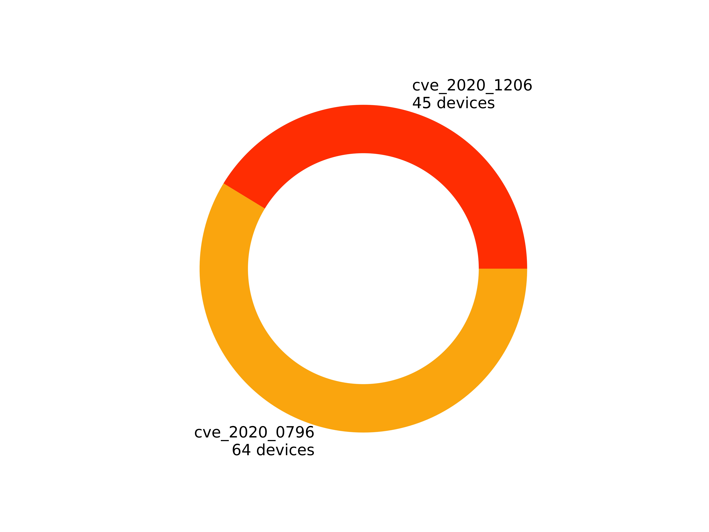

1. CVE 2020-1206漏洞檢測
2. CVE 2020-0796漏洞檢測
3. MS 08-067漏洞檢測
4. MS 17-010漏洞檢測
5. 風險帳號
6. 風險資料夾資訊



| 漏洞名稱 | cve_2020_1206 |
|---|---|
| 弱點敘述 | 該漏洞產生的原因是SMB的解壓縮函數Srv2DecompressData在處理發送給目標SMBv3服務器以偽造的息請求時，所產生問題，攻擊者可以讀取未初始化的kernel內存，還可以對壓縮函數進行修改。 |
| 建議措施 | 目前微軟官方已針對此弱點釋出更新程式，請至下列連結進行更新：https://portal.msrc.microsoft.com/en-US/security-guidance/advisory/CVE-2020-1206 |
| 風險IP |
10.10.1.42 10.10.1.111 10.10.1.104 10.10.1.159 10.10.1.209 10.10.1.131 10.10.1.121 10.10.1.185 10.10.1.31 10.10.1.69 10.10.1.47 10.10.1.180 10.10.1.223 10.10.1.135 10.10.1.150 10.10.1.43 10.10.1.236 10.10.1.154 10.10.1.110 10.10.1.143 10.10.1.57 10.10.1.64 10.10.1.202 10.10.1.140 10.10.1.188 10.10.1.63 10.10.1.107 10.10.1.72 10.10.1.141 10.10.1.189 10.10.1.126 10.10.1.152 10.10.1.130 10.10.1.153 10.10.1.147 10.10.1.73 10.10.1.108 10.10.1.148 10.10.1.32 10.10.1.136 10.10.1.30 10.10.1.137 10.10.1.139 10.10.1.106 10.10.1.160 |
| 漏洞名稱 | cve_2020_0796 |
|---|---|
| 弱點敘述 | 該漏洞遠讓遠端攻擊者可對目標系統之SMBv3服務發送特製請求或架設惡意的SMBv3伺服器誘騙受害者進行連線，導致遠端執行任意程式碼 |
| 建議措施 | 目前微軟官方已針對此弱點釋出更新程式，請至下列連結進行更新：https://portal.msrc.microsoft.com/en-US/security-guidance/advisory/CVE-2020-0796 |
| 風險IP |
10.10.1.42 10.10.1.61 10.10.1.187 10.10.1.111 10.10.1.104 10.10.1.138 10.10.1.207 10.10.1.7 10.10.1.159 10.10.1.209 10.10.1.131 10.10.1.121 10.10.1.185 10.10.1.31 10.10.1.69 10.10.1.47 10.10.1.180 10.10.1.223 10.10.1.135 10.10.1.51 10.10.1.150 10.10.1.43 10.10.1.236 10.10.1.154 10.10.1.110 10.10.1.143 10.10.1.57 10.10.1.64 10.10.1.105 10.10.1.48 10.10.1.202 10.10.1.140 10.10.1.188 10.10.1.63 10.10.1.107 10.10.1.72 10.10.1.141 10.10.1.125 10.10.1.76 10.10.1.189 10.10.1.126 10.10.1.152 10.10.1.130 10.10.1.153 10.10.1.147 10.10.1.59 10.10.1.58 10.10.1.73 10.10.1.75 10.10.1.60 10.10.1.108 10.10.1.109 10.10.1.148 10.10.1.32 10.10.1.136 10.10.1.100 10.10.1.30 10.10.1.137 10.10.1.139 10.10.1.238 10.10.1.166 10.10.1.199 10.10.1.106 10.10.1.160 |
| IP位置 | 10.10.1.47 | 資料夾資訊 |
資料夾： print$ 資料夾資料 Current user access READ {'prove': ['color', 'IA64', 'W32X86', 'x64']} |
|---|